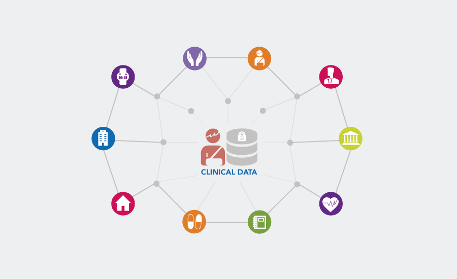

Disponibilidad
Basado en el concepto de confiabilidad este nos permite evitar fallas. Tácticas más utilizadas...
Leer más

Interoperabilidad
Permitirá intercambiar información de dos o más sistemas. Tácticas más utilizadas...
Leer másModificabilidad
Hacer cambios en nuestros sistemas para una mayor estabilidad. Tácticas más utilizadas...
Leer más